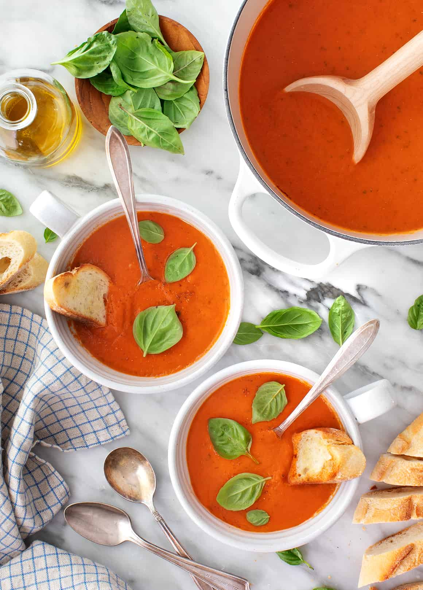

Tomato Basil Soup

Ingredients
- Roma tomatoes
- Onion and garlic
- Carrot
- Balsamic vinegar
- Thyme leaves
- Fresh basil
- Extra-virgin olive oil
- Vegetable broth
- Sea salt and black Pepper
Steps
- Roast the tomatoes by slicing them in half vertically and laying them on a parchment-lined baking sheet cut-side-up. Drizzle them with olive oil and season with salt and pepper. Then, roast them at 350 degrees Farenheit for an hour
- Cook the onion, carrot, and garlic in a large pot over medium heat for about 8 minutes, or until they soften.
- Add the roasted tomatoes, broth, vinegar, and thyme leaves to the pot, bring to a boil, and simmer for 20 minutes to allow the flavors to develop.
- Allow the tomato basil soup to cool slightly. Transfer it to a blender and puree until smooth, working in batches if necessary.
- When the soup is smooth, add the basil leaves and pulse the blender until just combined. Serve and enjoy!